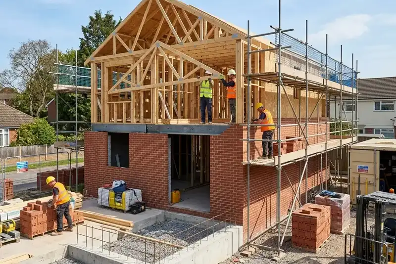

Daftar Isi
- Apa Itu Jasa Bangun Kos-kosan di Malang?
- Mengapa Permintaan Kos-kosan di Malang Terus Meningkat?
- Apa Saja Manfaat Menggunakan Jasa Bangun Kos-kosan Profesional?
- Bagaimana Cara Kerja Jasa Bangun Kos-kosan di Malang?
- Apa Saja Faktor yang Memengaruhi Biaya Bangun Kos-kosan di Malang?
- Apa Saja Kesalahan Umum yang Perlu Dihindari?
- Tips Memilih Jasa Bangun Kos-kosan Terpercaya di Malang
- FAQ
Jasa bangun kos-kosan di Malang adalah layanan konstruksi yang membantu pemilik lahan mendirikan bangunan kos dari perencanaan desain hingga serah terima, disesuaikan kebutuhan target penghuni seperti mahasiswa dan pekerja.
- Malang memiliki permintaan kos tinggi karena statusnya sebagai kota pendidikan dengan banyak kampus besar.
- Jasa bangun kos-kosan mencakup perencanaan desain, pengurusan izin, konstruksi, hingga finishing interior.
- Biaya bervariasi tergantung jumlah kamar, spesifikasi material, dan lokasi lahan.
- Memilih kontraktor berpengalaman di bidang kos-kosan mengurangi risiko pembengkakan anggaran.
- Perencanaan tata ruang yang efisien meningkatkan nilai sewa dan tingkat hunian kos.
Apa Itu Jasa Bangun Kos-kosan di Malang?
Jasa bangun kos-kosan di Malang adalah layanan konstruksi terintegrasi yang menangani seluruh proses pembangunan rumah kos, mulai dari konsultasi awal, desain arsitektur, hingga pengerjaan fisik bangunan.
Layanan ini berbeda dari jasa bangun rumah tinggal biasa karena kos-kosan memiliki kebutuhan khusus, seperti efisiensi jumlah kamar per luas lahan, sistem keamanan bersama, serta fasilitas umum seperti dapur, area jemur, dan ruang parkir. Kontraktor yang berpengalaman di bidang ini biasanya memahami pola kebiasaan penghuni kos di kota pendidikan seperti Malang, sehingga desain yang dihasilkan lebih fungsional dan efisien secara operasional jangka panjang.
Di Malang, permintaan terhadap layanan ini didorong oleh keberadaan sejumlah perguruan tinggi besar yang setiap tahun menerima mahasiswa baru dari luar kota, menciptakan kebutuhan hunian sewa yang stabil di sekitar kawasan kampus.
Mengapa Permintaan Kos-kosan di Malang Terus Meningkat?
Permintaan kos-kosan di Malang terus meningkat karena kota ini menjadi tujuan pendidikan tinggi favorit di Jawa Timur dengan populasi mahasiswa pendatang yang besar setiap tahun ajaran baru.
Selain faktor pendidikan, Malang juga berkembang sebagai kota dengan sektor pariwisata dan ekonomi kreatif yang menarik pekerja pendatang, sehingga kebutuhan hunian sewa jangka menengah ikut bertambah. Kawasan seperti sekitar kampus-kampus besar, pusat kota, dan area Kota Batu yang berdekatan menjadi lokasi favorit untuk pembangunan kos baru.
Secara umum, wilayah dengan akses transportasi mudah menuju kampus dan pusat perbelanjaan cenderung memiliki tingkat okupansi kos yang lebih stabil dibandingkan lokasi yang jauh dari fasilitas tersebut. Pola ini konsisten diamati pada berbagai proyek kos di kota-kota pendidikan di Indonesia dari tahun ke tahun.
Apa Saja Manfaat Menggunakan Jasa Bangun Kos-kosan Profesional?
Manfaat utama menggunakan jasa bangun kos-kosan profesional adalah efisiensi desain ruang, kepatuhan terhadap standar bangunan, dan potensi nilai investasi yang lebih optimal dibanding membangun secara mandiri tanpa perencanaan matang.
Beberapa manfaat konkret meliputi:
- Desain tata ruang yang dioptimalkan untuk memaksimalkan jumlah kamar tanpa mengorbankan kenyamanan.
- Pengurusan dokumen perizinan bangunan yang sesuai regulasi setempat.
- Pemilihan material yang seimbang antara daya tahan dan efisiensi biaya.
- Estimasi anggaran atau RAB yang lebih akurat sejak awal proyek.
- Pendampingan pascabangun seperti masa garansi konstruksi.
Kontraktor berpengalaman juga umumnya memiliki jaringan pemasok material dan tenaga kerja terampil, sehingga proses pembangunan dapat berjalan lebih terstruktur dibandingkan mengelola proyek secara swadaya tanpa tim yang terkoordinasi.
Bagaimana Cara Kerja Jasa Bangun Kos-kosan di Malang?
Cara kerja jasa bangun kos-kosan di Malang umumnya dimulai dari konsultasi kebutuhan, survei lahan, penyusunan desain dan RAB, pengurusan izin, hingga pelaksanaan konstruksi sampai serah terima kunci.
Tahapan yang biasa dilalui meliputi:
- Konsultasi awal untuk memahami target penghuni, jumlah kamar, dan anggaran yang tersedia.
- Survei lokasi untuk menilai kondisi tanah, akses jalan, dan potensi kendala teknis.
- Penyusunan desain arsitektur beserta rencana anggaran biaya (RAB).
- Pengurusan izin mendirikan bangunan sesuai ketentuan wilayah setempat.
- Pelaksanaan konstruksi fisik, mulai dari pondasi hingga struktur atap.
- Tahap finishing, termasuk instalasi listrik, air, dan interior kamar.
- Serah terima bangunan disertai masa garansi konstruksi tertentu.
Durasi setiap tahap dapat bervariasi tergantung kompleksitas desain dan kondisi lahan, sehingga penting bagi pemilik proyek untuk mendiskusikan estimasi waktu secara jelas sejak awal.
Apa Saja Faktor yang Memengaruhi Biaya Bangun Kos-kosan di Malang?
Faktor utama yang memengaruhi biaya bangun kos-kosan di Malang meliputi luas lahan, jumlah kamar, spesifikasi material, tingkat kesulitan struktur, dan lokasi proyek di dalam kota.
Beberapa faktor spesifik yang perlu diperhatikan:
- Jenis material struktur dan finishing yang dipilih, seperti kualitas keramik, cat, dan atap.
- Jumlah lantai bangunan, karena kos bertingkat memerlukan struktur tambahan seperti tangga dan balok penopang.
- Fasilitas tambahan seperti kamar mandi dalam, AC, atau area komunal.
- Kondisi tanah dan aksesibilitas lokasi proyek terhadap jalan utama.
- Biaya tenaga kerja yang dapat berbeda antar kontraktor tergantung skala tim.
Karena variabel ini berbeda pada setiap proyek, kisaran biaya yang akurat sebaiknya diperoleh melalui konsultasi dan survei langsung dengan penyedia jasa, bukan berdasarkan asumsi umum semata.
Apa Saja Kesalahan Umum yang Perlu Dihindari?
Kesalahan umum dalam membangun kos-kosan di Malang meliputi perencanaan anggaran yang tidak matang, mengabaikan riset lokasi, dan memilih kontraktor tanpa memeriksa rekam jejak proyek sebelumnya.
Kesalahan yang sering terjadi antara lain:
- Tidak menyisihkan dana cadangan untuk biaya tak terduga selama konstruksi.
- Mendesain kamar tanpa mempertimbangkan kebutuhan ventilasi dan pencahayaan alami.
- Mengabaikan riset kebutuhan target penghuni, misalnya mahasiswa versus pekerja.
- Tidak memeriksa legalitas lahan dan kelengkapan izin sebelum konstruksi dimulai.
- Memilih kontraktor hanya berdasarkan harga termurah tanpa mengecek kualitas hasil kerja sebelumnya.
Menghindari kesalahan ini sejak tahap perencanaan dapat mengurangi risiko pembengkakan biaya dan keterlambatan proyek di kemudian hari.
Tips Memilih Jasa Bangun Kos-kosan Terpercaya di Malang
Tips utama memilih jasa bangun kos-kosan terpercaya di Malang adalah memeriksa portofolio proyek sebelumnya, transparansi RAB, dan kejelasan sistem garansi pascabangun.
Beberapa tips praktis yang dapat diterapkan:
- Minta contoh portofolio kos-kosan yang pernah dikerjakan kontraktor tersebut.
- Bandingkan penawaran dari beberapa penyedia jasa untuk melihat kewajaran harga.
- Pastikan kontrak kerja mencantumkan rincian material, jadwal, dan ketentuan garansi secara jelas.
- Tanyakan pengalaman kontraktor dalam menangani proyek kos, bukan hanya rumah tinggal biasa.
- Perhatikan komunikasi dan responsivitas tim selama proses konsultasi awal.
Kejelasan komunikasi sejak awal proyek umumnya menjadi indikator penting mengenai profesionalisme sebuah penyedia jasa konstruksi.